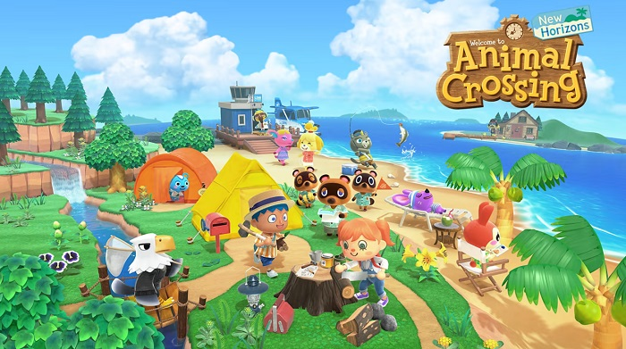
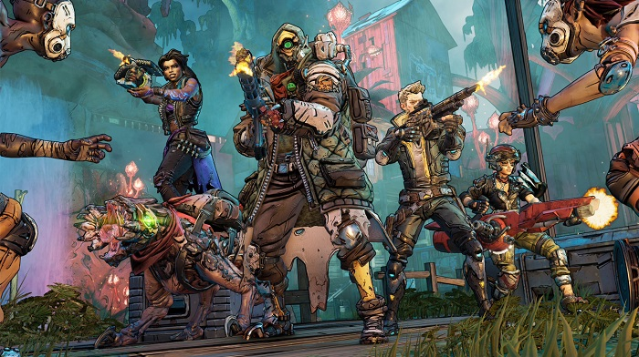
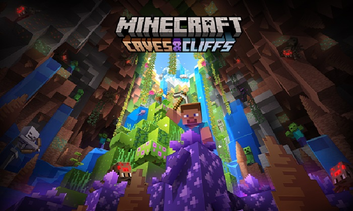

Hobbies
Oh, you want to know more about my hobbies? Hmm…
One interesting thing about me is that in addition to STEM, I’m also very into arts and crafts! I really like exploring
many different mediums and learning how to use them. As with all things, it takes a ton of time and practice to become
proficient, but as my side hobby, I try to focus on enjoying the process of creating, rather than the outcome! Some of my
favourite mediums are:
- crochet
- sketching and doodling
- oil painting
- watercolour painting
- acrylic painting
- collage
- pottery
- pixel art

Games
I also really like playing video games! While I do enjoy a large variety of games in many different genres, I tend to play cute, simple games the most! They’re very relaxing, which makes them perfect for winding down in the evening or on weekends. I’ve chosen a few of my favourites to share with you, with an image and a brief description to explain each game!
- Animal Crossing: New Horizons (AC:NH)
- 
- ACNH is a super cute and simple simulation game where you move to a deserted island with Tom Nook’s getaway package employees and become the island manager responsible for developing the island. You can accomplish this at your own pace by building infrastructure, inviting villagers to move onto the island, and decorating it however you like. The main feature of ACNH is the creativity of decorating: the game has thousands of items (most of which have multiple colour variations), and custom designs which allow you to make whatever you want!
- Borderlands 3 (BL3)
- 
- BL3 is a first person shooter where you play as a Vault Hunter, and work with the Crimson Raiders (Vault Hunters from previous Borderlands games) to defeat cult leaders Troy and Tyreen. At the beginning of a new game, you can choose one of four character classes which give you special combat abilities which you can upgrade in skill trees by levelling up. BL3 stands out from the previous games in the series because its story, characters, and customization options are much more detailed and interesting!
- Minecraft (MC)
- 
- MC is an incredibly popular sandbox game in which you can explore and build in a procedurally generated world. In survival mode, you need to collect resources to make tools, food, and shelter, and you may need to fight enemies. In creative mode, you have access to infinite resources, and you don’t take damage, so you can focus on building. The newest versions of MC have a ton of creatures, resources, and biomes to find, and this content expands exponentially if you consider fan-made mods as well!
Reading
Last but not least, I love reading! Unfortunately, with school, arts, crafts, and video games, I don’t have too much time to get lost in a book, but I try my best. I even took an English course last semester, specifically as an excuse to read some fantastic novels! I came up with a list of my favourite books (specifically those that represent my interests) for you:
- Welcome to Night Vale by Joseph Fink
- The Secret Garden by Frances Hodgson Burnett
- Pride and Prejudice by Jane Austen
- Frankenstein by Mary Shelley
- The Bell Jar by Sylvia Plath
- A Complicated Kindness by Miriam Toews
I also recently started S. created by J.J. Abrams (yes, the filmmaker, known for his work on Star Wars and Star Trek) and written by Doug Dorst—it’s not just a novel, it’s an experience. I hope you don’t mind me wrapping up here, I reeeeaaaally want to read some more of S. now that I’m thinking about it!